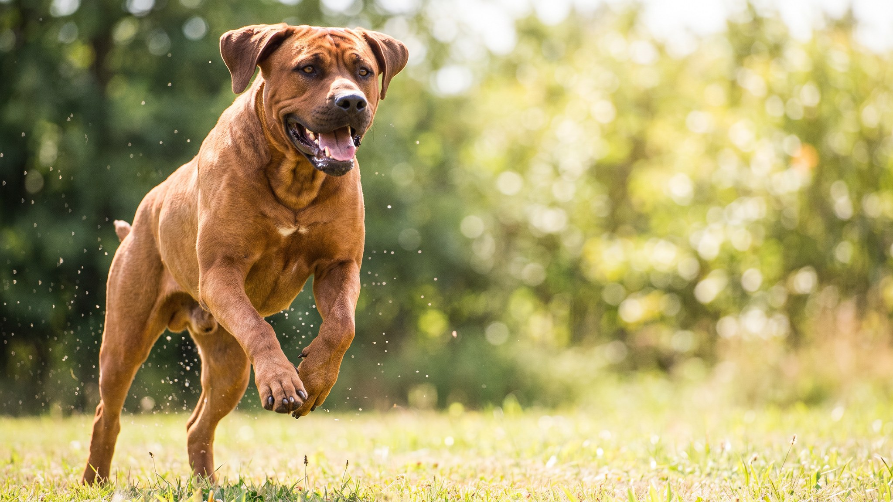

Тоса-ину весит от 40 до 90 кг, дома молчалив и почти невозмутим, снаружи — собака, которой в нескольких странах запрещено находиться в публичных местах без намордника. В России порода входит в перечень потенциально опасных: выгул только на коротком поводке и в наморднике, без исключений. Если хозяин готов к ответственности и имеет опыт с крупными породами, тоса способна стать исключительным компаньоном.
🐾 Ваш питомец — тоса-ину?
Заведите профиль в AnimaLife: приложение запомнит породу, возраст и вес и будет подсказывать по уходу именно для неё. Вопросы AI-ветеринару — круглосуточно и бесплатно.
Завести профиль → Завести в MAX →
У вас iPhone? AnimaLife есть в App Store
Тоса-ину исторически разводилась в Японии как молчаливая бойцовая собака: лай в ринге считался позором для породы. Это наследие сохранилось. Дома тоса ведёт себя спокойно и сдержанно, не склонна к беспочвенному лаю и не носится по квартире. К хозяину привязывается глубоко, но без навязчивости.
Тоса-ину — порода для владельца, который уже имел крупных собак и понимает, как выстраивать авторитет спокойно и последовательно. Жёсткое давление даёт обратный результат: порода запоминает несправедливость. Мягкое игнорирование правил тоже не работает.
Тоса-ину не гиперактивна, но крупное тело требует движения. Пара длинных прогулок в день плюс возможность свободно двигаться на площадке или огороженном дворе достаточно. В жару прогулки переносите на утро или вечер.
Шерсть короткая, уход минимальный: расчёска раз в неделю, ванна по необходимости. Брыли вытирайте после еды и воды: без этого запах и раздражение кожи у пасти неизбежны.
Важно про законодательство в РФ: тоса-ину включена в перечень потенциально опасных пород. Это значит обязательный намордник и короткий поводок в любых общественных местах. Хозяин несёт полную юридическую ответственность за действия собаки.
Честный ответ важнее красивой картинки. Тоса не для вас, если:
🐾 У вас тоса-ину?
AnimaLife соберёт уход под породу: к каким болезням есть склонность, что проверять по возрасту, чем кормить и когда пора к врачу. Бесплатно, прямо в мессенджере.
Собрать план ухода → Собрать в MAX →
У вас iPhone? AnimaLife есть в App Store
🐾 Понравился разбор?
Подпишитесь на канал — каждый день разбираем по одному тревожному симптому у кошек и собак: что в пределах нормы, а когда пора к врачу. Подпишитесь, чтобы не пропустить разбор, который может спасти здоровье вашего питомца.
Материал носит информационный характер и не заменяет очную консультацию ветеринара.